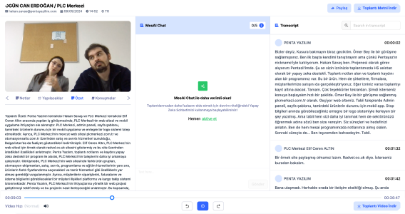
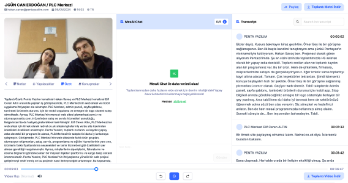

20+Yıllık Sektörel Deneyimimiz ile,
Hayal Ettiğiniz Ne Varsa Şimdi Gerçeğe Dönüşüyor
-
Sizi ve Firmanızı Daha Yakından Tanımak
Faaliyet alanınızı, hedeflerinizi ve mevcut stratejilerinizi anlamak, daha etkili bir işbirliği yapmamıza olanak tanıyacaktır.
-
Potansiyel Müşterilerinizin Kimler Olduğunu Anlamak
İşinizin başarısında kilit rol oynayan potansiyel müşterilerinizin kim olduğunu ve onların beklentilerini anlamak, stratejilerimizi doğru şekillendirmemize yardımcı olacaktır.
-
Müşteri Yolculuğunuzu Keşfetmek
Müşterilerinizin markanızla olan etkileşim süreçlerini analiz etmek istiyoruz. Bu sayede, müşteri deneyimini en iyi şekilde optimize edebiliriz.
-
Markanızı Rakiplerinizden Ayıran Özellikleri Belirlemek
Firmanız için en uygun yaklaşımı belirlemek üzere, markalaşma ve performans arasındaki dengeyi doğru bir şekilde kurmak. Hedeflerinize ulaşmak için en etkili yöntemi birlikte seçmek.
-
Branding Mi, Performans Mı?
Firmanız için en uygun yaklaşımı belirlemek üzere, markalaşma ve performans arasındaki dengeyi doğru bir şekilde kurmak. Hedeflerinize ulaşmak için en etkili yöntemi birlikte seçmek.
Bizim için
Güven'i
tasarlamak
daha değerli
20 yılı aşkın sektörel deneyimi ile web tasarım, yazılım
geliştirme ve marka stratejileri oluşturma gibi hizmetlerimizle, müşterilerimizin iş süreçlerini optimize etmeyi ve rekabet güçlerini artırmayı hedefliyoruz.
Slogan:
Daima Yanınızdayız:
Gelecek Hedefleri:
Global Pazar’da Liderlik
Kuruluş:
2002
Web tasarımı, bireylerin veya kuruluşların mal ve hizmetlerini
internette tanıtmaları için tasarlanmış bir yazılımdır.
-
+3
3 Ülke de Şubelerimiz
-
+50
Profesyonel Ekip
-
+1k
Web Tasarım & Yazılım
-
+320
Mutlu Müşteri
Dijital Çözümler Tek Bir Noktada!
360°

UI & UX Kriterlerine Uygun
Özgün ve Müşteri Odaklı
Tasarımlar Çiziyoruz.

Göz Alıcı Tasarımlar,
Mükemmel Kodlarla Hayat Buluyor
İçeriğinizi Kolayca
Yönetin, Dijital Varlığınızı
Güçlendirin.
Veri Tabanı Mimarisi
Bulut Tabanlı Çözümler
API Tasarım & Entegrasyonu
Kullanıcı Deneyimi Haritalama
Yeniden Kullanılabilir Bileşenler
Kullanıcı Odaklı Geliştirme
Detayları anlatabilmek

Görüntülenme Artışı
Detayları anlatabilmek
Görüntülenme Artışı
Detaylı Test Süreci,
Başarılı Yayın.
Standartlar hediye olarak sunulamaz.
at position 16
at position 16

at position 16
at position 16
at position 16
Mesai, toplantı verilerinizi kaydederek, yazıya dökerek ve analiz ederek toplantı etkinliğinizi ve üretkenliğinizi artıran bir yapay zeka toplantı asistanıdır.
 
